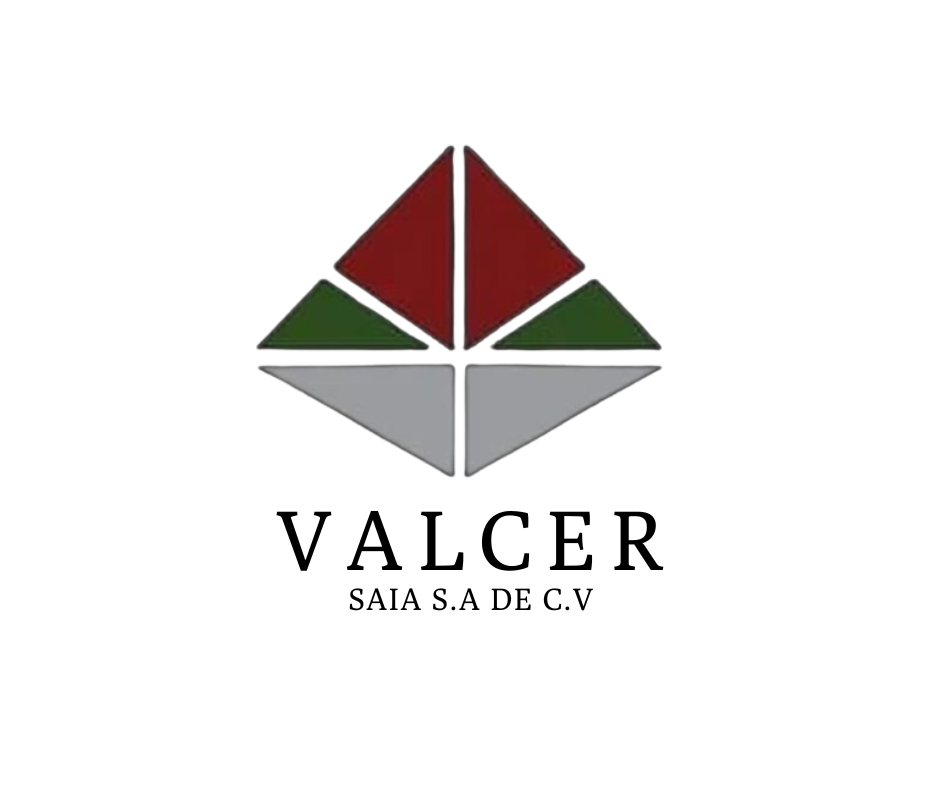

Ingeniería en Calidad y Servicios de Tercerización Automotriz
Reducimos defectos, aseguramos calidad y respondemos en menos de 24 horas en Puebla y Tlaxcala
Solicitar CotizaciónFundada en 2017, VALCER SAIA se especializa en servicios de calidad y procesos industriales, consolidándose en el sector automotriz en 2023.